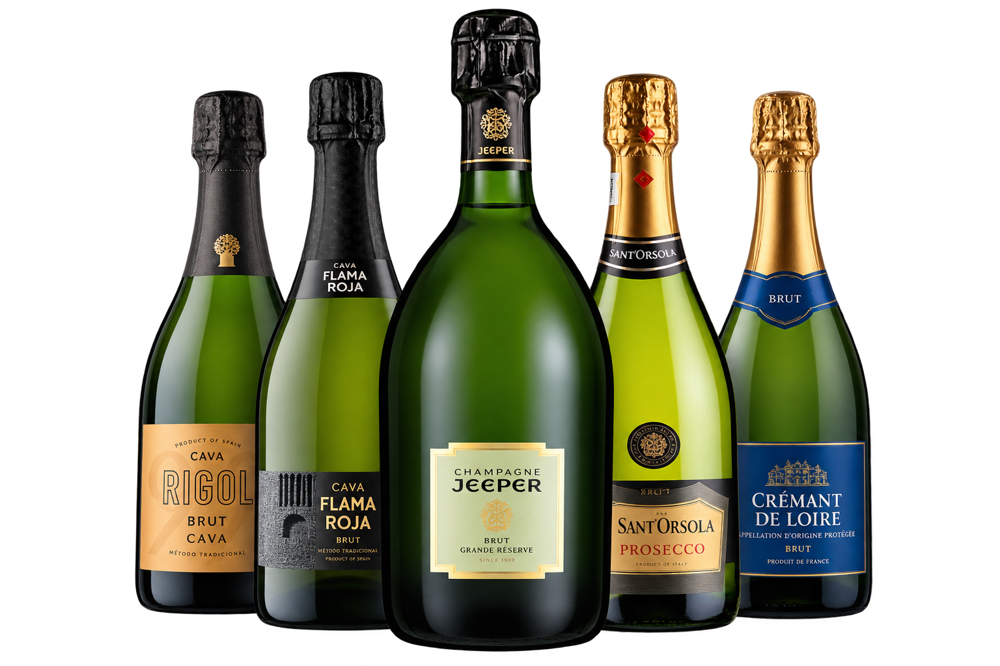
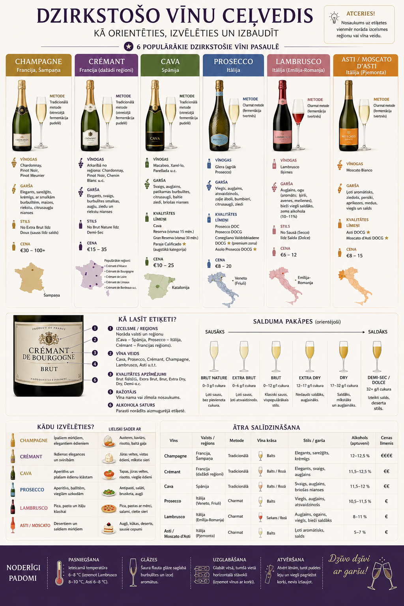

Введение
Ievads
Что такое игристое и что важно знать продавцу.
Kas ir dzirkstošais vīns un kas jāzina pārdevējam.
![VYNOTEKA]()

Практический курс для сотрудников магазина: научись быстро понимать категорию, объяснять разницу между стилями и уверенно рекомендовать бутылку клиенту.
Praktisks kurss veikala darbiniekiem: iemācies ātri orientēties kategorijā, izskaidrot atšķirības starp stiliem un pārliecinoši ieteikt klientam piemērotu pudeli.

Что такое игристое и что важно знать продавцу.
Kas ir dzirkstošais vīns un kas jāzina pārdevējam.
Главные характеристики и терминология.
Svarīgākās īpašības un termini.
Традиционный, танковый метод и газификация.
Tradicionālā, tvertnes metode un gāzēšana.
Что отличает Champagne от других игристых.
Ar ko Champagne atšķiras no citiem dzirkstošajiem.
Prosecco, Cava, Crémant и другие.
Prosecco, Cava, Crémant un citi.
Brut, Extra Brut, Extra Dry, Demi-Sec.
Brut, Extra Brut, Extra Dry, Demi-Sec.
Chardonnay, Pinot Noir, Glera и другие.
Chardonnay, Pinot Noir, Glera un citas.
Учимся читать этикетку Prosecco и понимать главное.
Mācāmies lasīt Prosecco etiķeti un saprast svarīgāko.
Как задать правильные вопросы клиенту.
Kādus jautājumus uzdot klientam.
Реальные покупательские сценарии.
Reālas pircēju situācijas.
15 вопросов, проходной результат — 80%.
15 jautājumi, nokārtošanai — 80%.
Практический курс: основные понятия, производство, сладость, регионы, этикетка и рекомендации по ассортименту VYNOTEKA.
Praktisks kurss: pamatjēdzieni, ražošana, salduma līmeņi, reģioni, etiķete un ieteikumi darbam ar VYNOTEKA sortimentu.
Игристое вино — вино с растворённым углекислым газом, создающим пузырьки.
Dzirkstošais vīns ir vīns ar izšķīdušu ogļskābo gāzi, kas veido burbuļus.
Пузырьки — ключевой признак категории.
Burbuļi ir galvenā kategorijas pazīme.
Самый распространённый стиль.
Visizplatītākais stils.
Часто более ягодное и ароматное.
Bieži izteiktāks ogu un augļu raksturs.
Отдельная ниша игристых вин.
Atsevišķa dzirkstošo vīnu niša.
Главное для продавца — понимать разницу между традиционным и танковым методом.
Pārdevējam galvenais ir saprast atšķirību starp tradicionālo un tvertnes metodi.
Вторичная ферментация проходит в бутылке. Контакт с дрожжами может давать более сложные, хлебные и кремовые оттенки.
Otrā fermentācija notiek pudelē. Kontakts ar raugiem var piešķirt sarežģītākas, maizes un krēmveida nianses.
Вторичная ферментация проходит в герметичном резервуаре. Хорошо сохраняет свежие фруктовые и цветочные ароматы.
Otrā fermentācija notiek slēgtā tvertnē. Labi saglabā svaigus augļu un ziedu aromātus.
Готовое вино насыщают CO₂. Обычно это более простой и доступный стиль.
Gatavam vīnam pievieno CO₂. Parasti tas veido vienkāršāku un pieejamāku stilu.
Защищённое географическое наименование. Champagne производится в регионе Champagne во Франции по установленным правилам.
Aizsargāts ģeogrāfiskais nosaukums. Champagne ražo Champagne reģionā Francijā saskaņā ar noteiktiem noteikumiem.
Champagne, Франция.
Champagne, Francija.
Традиционный метод.
Tradicionālā metode.
Chardonnay · Pinot Noir · Pinot Meunier
Традиционный метод; от доступных Crémant до премиального Champagne.
Tradicionālā metode; no pieejamāka Crémant līdz premium Champagne.
От свежего фруктового Prosecco до сладкого Asti и более сложной Franciacorta.
No svaiga augļu Prosecco līdz saldam Asti un sarežģītākai Franciacorta.
Традиционный метод и часто хорошее соотношение цены и качества.
Tradicionālā metode un bieži laba cenas/kvalitātes attiecība.
Īss pārskats, lai veikalā ātri saprastu, ko piedāvāt klientam.
Краткая шпаргалка, чтобы быстро понять, что предложить клиенту.
Tradicionālā metode → Champagne, Crémant, Cava. Tvertnes/Charmat → Prosecco, Lambrusco, Asti.
Традиционный метод → Champagne, Crémant, Cava. Танковый/Charmat → Prosecco, Lambrusco, Asti.
Champagne €30–100+ · Crémant €15–35 · Cava €10–25 · Prosecco €8–20 · Lambrusco €6–12 · Asti €8–15

Oficiālas kvalitātes pakāpes nav, bet svarīgs ir reģions un ražotājs.
Официальной системы уровней качества нет, но важны регион и производитель.
Meklē:Ищи: Crémant d’Alsace · Crémant de Bourgogne · Crémant de Loire
Важно: название Extra Dry звучит «суше», но по факту этот стиль обычно слаще Brut.
Svarīgi: Extra Dry nosaukums izklausās “sausāks”, bet faktiski tas parasti ir saldāks par Brut.
Цитрус, яблоко, свежесть, элегантность.
Citrusi, ābols, svaigums, elegance.
Champagne · Cava · CrémantЯгоды, тело, структура.
Ogas, struktūra, ķermenis.
Champagne · Rosé · CrémantФруктовость и мягкость.
Augļainums un maigums.
ChampagneЯблоко, груша, белые цветы, свежесть.
Ābols, bumbieris, baltie ziedi, svaigums.
ProseccoОдин из классических сортов Cava.
Viena no klasiskajām Cava šķirnēm.
CavaСтруктура и свежесть в купажах Cava.
Struktūra un svaigums Cava kupāžās.
CavaПеред рекомендацией посмотри минимум на пять вещей.
Pirms ieteikuma pārbaudi vismaz piecas lietas.
Champagne · Prosecco · Cava · Crémant
Brut · Extra Brut · Extra Dry · Demi-Sec
Страна, регион, DOC/DOCG/AOP и т.д.
Valsts, reģions, DOC/DOCG/AOP u.c.
Если указан на этикетке.
Ja norādīts uz etiķetes.
Продавец не должен читать клиенту лекцию. Нужно быстро понять потребность и дать 1–2 понятных варианта.
Pārdevējam nav jālasa klientam lekcija. Ātri noskaidro vajadzību un piedāvā 1–2 saprotamus variantus.
Подарок, праздник, ужин, аперитив?
Dāvana, svētki, vakariņas, aperitīvs?
Сухое, фруктовое, сладкое, сложное?
Sauss, augļains, salds, sarežģīts?
Какой ориентир по цене?
Kāds ir cenu orientieris?
Предложи конкретную бутылку и коротко объясни почему.
Piedāvā konkrētu pudeli un īsi paskaidro, kāpēc.
«Это для подарка или для себя? Предпочитаете сухое или более фруктовое? Какой бюджет? Тогда я покажу два подходящих варианта».
“Tas ir dāvanai vai sev? Vai dodat priekšroku sausam vai augļainākam? Kāds ir budžets? Tad parādīšu divus piemērotus variantus.”
Champagne ap 8–10 °C; Lambrusco un Asti ap 6–8 °C.
Champagne около 8–10 °C; Lambrusco и Asti около 6–8 °C.
Šaura flute glāze palīdz saglabāt burbulīšus un izcelt aromātus.
Узкий фужер помогает сохранить пузырьки и раскрыть аромат.
Glabāt vēsā, tumšā vietā; ceļvedī norādīta horizontāla pozīcija (izņemot vīnus ar korķi).
Хранить в прохладном тёмном месте; в гиде указано горизонтальное положение (кроме вин с пробкой).
Turi korķi, lēnām griez pudeli un nekad nevērs korķi pret cilvēku.
Держи пробку, медленно вращай бутылку и никогда не направляй пробку на человека.
Клиент: «Мне шампанское до 10 евро». Что сделать?
Klients: “Man vajag šampanieti līdz 10 eiro.” Ko darīt?
Клиент хочет сухое, но фруктовое.
Klients vēlas sausu, bet augļainu vīnu.
15 вопросов. Для прохождения нужно набрать минимум 80%.
15 jautājumi. Lai nokārtotu, jāiegūst vismaz 80%.